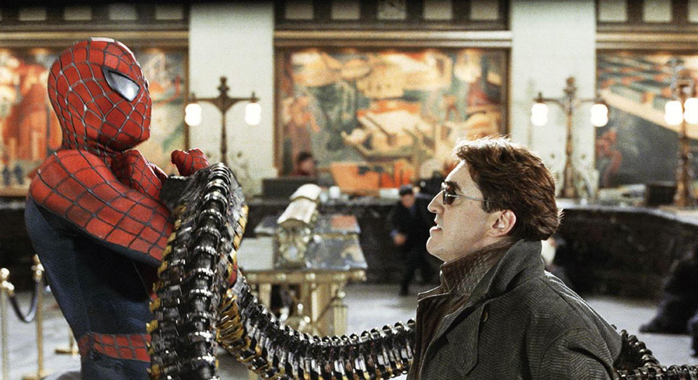

ピーター・パーカー / スパイダーマン
私生活の崩壊に苦しむヒーロー // 苦悩する青年
ヒーロー活動の代償として大学の成績は落ち、バイトはクビ、家賃は滞納と生活が極限まで崩壊。精神的ストレスからスパイダーパワーを一時的に喪失しスーツを捨てるが、ドック・オクの脅威とMJの危機を前に、再び「責任」を背負う覚悟を決める。名シーンである暴走電車の急停止など、生身を削って人々を護り抜く。
「僕はもうスパイダーマンじゃない。自分の人生を生きるんだ。……でも、誰かがやらなきゃいけないんだ。」
メリー・ジェーン・ワトソン (MJ)
舞台女優としての階段を上る恋人
念願の舞台女優として成功を収めつつあるが、肝心な時にいつも約束を破るピーターに深く傷つき、別の男性との結婚を決意する。しかし心の底ではピーターを想い続けており、終盤ドック・オクに拉致されたことでスパイダーマンの正体がピーターである事実を知ることになる。
「わかってるでしょう？ドアの前に立って、あなたを見ていた私の気持ちが。……行って、ピーター。」
ハリー・オズボーン
オズコープ社の若きボス // 復讐に囚われし男
亡き父ノーマンの復讐のため、スパイダーマンの命を異常なほど執念深く狙う。トリチウムを提供することを条件にドック・オクと取引し、ついにスパイダーマンを捕獲。そのマスクを剥ぎ取った瞬間、正体が最愛の親友ピーターであるという残酷な真実に直面し、精神が崩壊しかける。
「友達だろ？」

オットー・オクタビアス / ドック・オク
悲劇の天才科学者 // 人工知能アームの傀儡
画期的な核融合実験を行うため、脊髄に4本の強力な金属製人工知能アームを装着。しかし実験の暴走事故で最愛の妻を失い、さらにアームの意思を抑える「制御チップ」が焼き切れたことで、アームのAIに精神を支配されてしまう。暴走する夢を叶えるため、再び危険な核融合装置を街のど真ん中に建設する。
「太陽の力が我が手の中に」